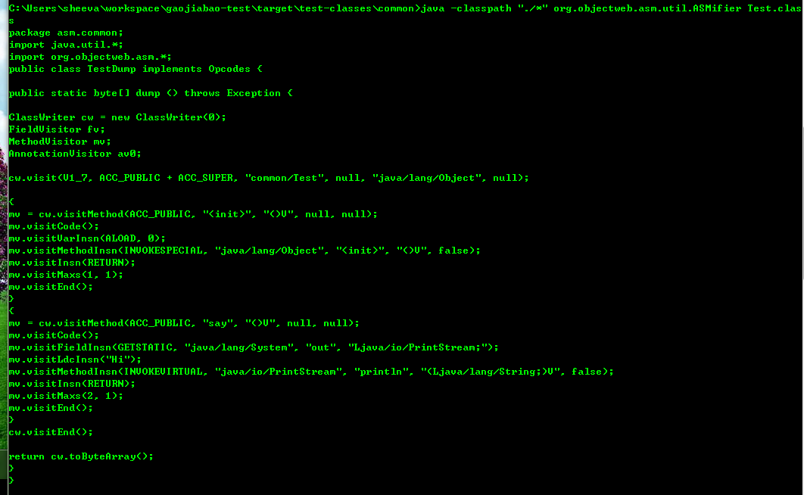
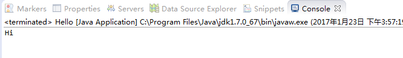
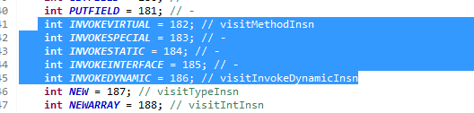
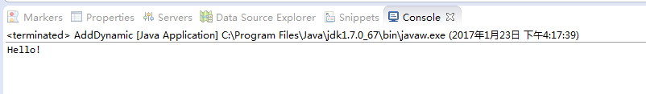

在看java虚拟机字节码执行引擎的时候，里面提到了java虚拟机里调用方法的字节码指令有5种：
-
- invokestatic //调用静态方法
- invokespecial //调用私有方法、实例构造器方法、父类方法
- invokevirtual //调用实例方法
- invokeinterface //调用接口方法，会在运行时再确定一个实现 此接口的对象
- invokedynamic //先在运行时动态解析出调用点限定符所引用的方法，然后再执行该方法，在此之前的4条调用指令，分派逻辑是固化在java虚拟机内部的，而invokedynamic指令的 分派逻辑是由用户所设定的引导方法决定的。
前4种很容易理解，但是第5种笔者本人从这段描述上无法理解这个invokedynamic到底是什么东 西，于是决定从实践入手来剖析一下。
invokedynamic本身是字节码命令，我们想直接调用这个命令只能手写java字节码，这个难度太 大了。。有没有替换方案呢，答案是有的。
ASM 简介
官方的定义：ASM是一个java字节码操作和分析框架。可以用来编辑classes文件和直接动态生成 class文件，一切都是直接基于二进制形式的。
我来解释下：我们都知道，一个.java文件编译后会生成.class文件，.java文件中记录代码的形 式是java源代码，而.class文件中记录代码的形式是java字节码，这两者本质上是以不同的形式存储相同的内容，两者也可以相关转换（编译和反编译）。而asm本身是一个java库，所以说编写asm代码的时候本质是在写 java源代码，但是asm代码的最终目的并不是为了运行，而是为了生成字节码。
举个例子：
我现在有一个Test.java类：

package common; public class Test { public void say(){ System.out.println("Hi"); } }
这个类编译后生成Test.class，Test.class文件里存储的实际上就是一个byte数组，但 是我们可以用javap -verbose命令翻译为字节码命令查看（忽略常量池等无关信息，只截取say()方法的CODE码）：
public void say(); flags: ACC_PUBLIC Code: stack=2, locals=1, args_size=1 0: getstatic #15 // Field java/lang/System.out:Ljava/io/PrintStream; 3: ldc #21 // String Hi 5: invokevirtual #23 // Method java/io/PrintStream.println:(Ljava/lang/String;)V 8: return
我标红的部分就是从字节码翻译过来的字节码命令，字节码和字节码命令是一一对应的，如 invokevirtual命令在源文件中就是一个字节 0xb6，对应关系可以查表：http://www.cnblogs.com/sheeva/p/6279096.html
看到这里我们会发现，这里的invokevirtual命令就是java调用方法的5种字节码中的第3种， 如果我们能够修改这里的invokevirtual改成invokedynamic我们就能搞清楚invokedynamic到底是做什么的了，但是javap命令只能以命令的形式查看字节码却不能修改，这时候就轮到asm登场了。
下载 asm5.2：http://download.forge.ow2.org/asm/asm-5.2-bin.zip
解压后在lib里找到asm-all-5.2.jar放到Test.class的目录下，执行：
java -classpath "./*" org.objectweb.asm.util.ASMifier Test.class，
运行结果如图：

生成了一个java类的源码，里面有一个dump()方法，这个方法返回值是byte[]，这个 byte[]的内容就是Test.class的字节码，也就是说如果把方法的返回值保存到一个文件，那么这个文件和Test.class文件是完全一样的。
为了验证这个结论，我把这个方法粘贴出来，自己写一个类加载器来加载方法返回的字节码然后调用say()方 法：
package invokedynamic; import org.objectweb.asm.AnnotationVisitor; import org.objectweb.asm.ClassWriter; import org.objectweb.asm.FieldVisitor; import org.objectweb.asm.MethodVisitor; import org.objectweb.asm.Opcodes; public class Hello implements Opcodes { public static void main(String[] args) throws Exception { byte[] codes=dump(); Class<?> clazz=new MyClassLoader().defineClass("common.Test", codes); clazz.getMethod("say", null).invoke(clazz.newInstance(), new Object[]{}); } public static byte[] dump() throws Exception { ClassWriter cw = new ClassWriter(0); FieldVisitor fv; MethodVisitor mv; AnnotationVisitor av0; cw.visit(V1_7, ACC_PUBLIC + ACC_SUPER, "common/Test", null, "java/lang/Object", null); { mv = cw.visitMethod(ACC_PUBLIC, "<init>", "()V", null, null); mv.visitCode(); mv.visitVarInsn(ALOAD, 0); mv.visitMethodInsn(INVOKESPECIAL, "java/lang/Object", "<init>", "()V", false); mv.visitInsn(RETURN); mv.visitMaxs(1, 1); mv.visitEnd(); } { mv = cw.visitMethod(ACC_PUBLIC, "say", "()V", null, null); mv.visitCode(); mv.visitFieldInsn(GETSTATIC, "java/lang/System", "out", "Ljava/io/PrintStream;"); mv.visitLdcInsn("Hi"); mv.visitMethodInsn(INVOKEVIRTUAL, "java/io/PrintStream", "println", "(Ljava/lang/String;)V", false); mv.visitInsn(RETURN); mv.visitMaxs(2, 1); mv.visitEnd(); } cw.visitEnd(); return cw.toByteArray(); } private static class MyClassLoader extends ClassLoader implements Opcodes { public Class<?> defineClass(String name, byte[] b){ return super.defineClass(name, b, 0, b.length); } } }
运行成功：

现在我们确定了，这个dump()方法确实能够生成Test.class的字节码，现在来看一下 dump()方法里的内容：
public static byte[] dump() throws Exception { ClassWriter cw = new ClassWriter(0); FieldVisitor fv; MethodVisitor mv; AnnotationVisitor av0; cw.visit(V1_7, ACC_PUBLIC + ACC_SUPER, "common/Test", null, "java/lang/Object", null); { mv = cw.visitMethod(ACC_PUBLIC, "<init>", "()V", null, null); mv.visitCode(); mv.visitVarInsn(ALOAD, 0); mv.visitMethodInsn(INVOKESPECIAL, "java/lang/Object", "<init>", "()V", false); mv.visitInsn(RETURN); mv.visitMaxs(1, 1); mv.visitEnd(); } { mv = cw.visitMethod(ACC_PUBLIC, "say", "()V", null, null); mv.visitCode(); mv.visitFieldInsn(GETSTATIC, "java/lang/System", "out", "Ljava/io/PrintStream;"); mv.visitLdcInsn("Hi"); mv.visitMethodInsn(INVOKEVIRTUAL, "java/io/PrintStream", "println", "(Ljava/lang/String;)V", false); mv.visitInsn(RETURN); mv.visitMaxs(2, 1); mv.visitEnd(); } cw.visitEnd(); return cw.toByteArray(); }
如果熟悉字节码的话，应该已经看出来了，dump()这个方法所在的类实现了Opcodes接 口，Opcodes接口里定义了几乎全部的java字节码命令，我们之前说的5个invoke命令也在内：

然后看一下dump()方法里我标红的4句，和之前的javap命令打出来的Test.class字节码命 令对照看：
mv.visitFieldInsn(GETSTATIC, "java/lang/System", "out", "Ljava/io/PrintStream;");
mv.visitLdcInsn("Hi");
mv.visitMethodInsn(INVOKEVIRTUAL, "java/io/PrintStream", "println", "(Ljava/lang/String;)V", false);
mv.visitInsn(RETURN);
public void say(); flags: ACC_PUBLIC Code: stack=2, locals=1, args_size=1 0: getstatic #15 // Field java/lang/System.out:Ljava/io/PrintStream; 3: ldc #21 // String Hi 5: invokevirtual #23 // Method java/io/PrintStream.println:(Ljava/lang/String;)V 8: return
不需要解释了吧。。
用asm调用 invokedynamic指令
现在我们来把原来say方法里的通过invokevirtual输出Hi的代码去掉，改成通过 invokedynamic输出hello。
在dump()方法所在的类Hello类的包里加一个类Bootstrap:
package invokedynamic; import java.lang.invoke.*; public class Bootstrap { private static void hello() { System.out.println("Hello!"); } public static CallSite bootstrap(MethodHandles.Lookup caller, String name, MethodType type) throws NoSuchMethodException, IllegalAccessException { MethodHandles.Lookup lookup = MethodHandles.lookup(); Class thisClass = lookup.lookupClass(); MethodHandle mh = lookup.findStatic(thisClass, "hello", MethodType.methodType(void.class)); return new ConstantCallSite(mh.asType(type)); } }
Hello类把say()方法里原来通过invokevirtual调用 System.out.println()方法的那几行去掉，换成动态调用：
{ mv = cw.visitMethod(ACC_PUBLIC, "say", "()V", null, null); mv.visitCode(); // mv.visitFieldInsn(GETSTATIC, "java/lang/System", "out", "Ljava/io/PrintStream;"); // mv.visitLdcInsn("Hi"); // mv.visitMethodInsn(INVOKEVIRTUAL, "java/io/PrintStream", "println", "(Ljava/lang/String;)V", false); // mv.visitInsn(RETURN); // mv.visitMaxs(2, 1); MethodType mt = MethodType.methodType(CallSite.class, MethodHandles.Lookup.class, String.class, MethodType.class); Handle bootstrap = new Handle(Opcodes.H_INVOKESTATIC, "invokedynamic/Bootstrap", "bootstrap", mt.toMethodDescriptorString()); mv.visitInvokeDynamicInsn("dynamicInvoke", "()V", bootstrap); mv.visitInsn(RETURN); mv.visitMaxs(0, 1); mv.visitEnd(); }
再次运行，这次输出变了：

结论
现在我们结合我们得到的代码，再重新理解一下invokedynamic的定义：
先在运行时动态解析出调用点限定符所引用的方法， //即通过bootstrap方法动态解析出 hello方法
然后再执行该方法， //即执行hello方法
而invokedynamic指令的分派逻辑是由用户所设定的引导方法决定的。 //这里的引导方法，即 我们定义的bootstrap方法，这里我们的逻辑是直接分派了hello方法，但是我们也可以写一些逻辑，比如根据调用时候的参数类型来动态决定调用哪个方法
现在我们已经自己实践了invokedynamic命令的使用，但是我相信很多人还是不明白这个命令的意义 所在，这要从语言的静态类型和动态类型说起：
静态类型就是每个变量在初始化的时候就要声明唯一的类型并且不能改变。
动态类型就是说变量没有固定类型，变量的类型取决于它里面元素的类型。
java语言是静态类型的。有人可能会提到泛型，java的泛型是擦除式的，也就是说虽然在编写java源 码时看起来好像不能确定变量类型，但是在java编译为字节码的过程中，每一个变量都是有确定的类型的。
所以从java语言的角度，之前的4条方法调用指令是完全够用的，但是要知道，jvm不只是跨平台的，还是 跨语言的，当有人在jvm上试图开发动态类型语言的时候，问题就来了：
jvm大多数指令都是类型无关的，但是在方法调用的时候，却不是这样，每个方法调用在编译阶段就必须指明方 法参数和返回值类型，但是动态类型语言的方法参数，直到运行时刻才能知道类型啊，因此jdk就做了这样一个“补丁”：用invokedynamic调用方法的时候，会转到bootstrap方法，在这个方法里可以动态获取参数类型，然 后根据参数类型分派合适的方法作为CallSite(动态调用点)，最后真实调用的就是CallSize里的方法。如此便能在jvm上实现动态类型语言的方法调用了。